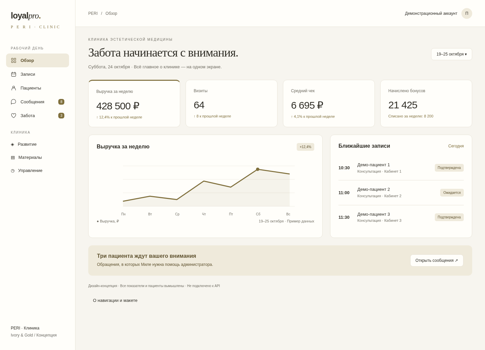
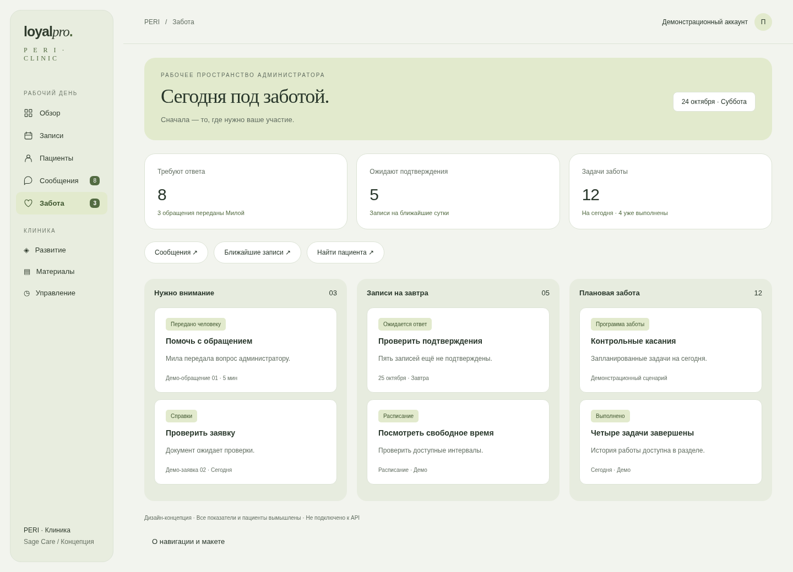
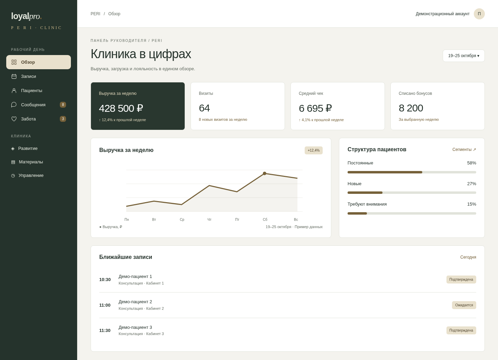

01 / Ivory & Gold
Молочный фон, сдержанное золото, выразительный заголовок. Обзор клиники объединяет показатели, ближайшие записи и обращения, которым нужно внимание.
Три авторских визуальных референса для интерфейса сотрудников. Общая идея: спокойная клиническая эстетика, ясная навигация и нужные действия рядом с рабочей задачей.
Основа: изображения сайта PERI в репозитории — белый фон, золотисто-оливковые акценты — и ранее согласованная cream/olive-концепция LoyalPro от 10.05.2026. Проект «PERI — Контент Instagram» в доступных источниках не найден. Палитры и типографику нужно сверить с ним; это не извлечённые из брендбука значения.

Молочный фон, сдержанное золото, выразительный заголовок. Обзор клиники объединяет показатели, ближайшие записи и обращения, которым нужно внимание.

Шалфей, светлые поверхности и мягкие формы. Главный экран администратора — очередь задач: обращения, подтверждения и забота. Развивает прежнюю cream/olive-концепцию.

Тёмная оливковая навигация, светлая рабочая область и латунные акценты. Более плотная компоновка для руководителя: выручка, сегменты и визиты.
Сейчас у владельца 15 пунктов верхнего меню, включая настройки и инструменты агента. Предложение: 5 ежедневных входов и 3 раскрывающиеся группы. Пункты внутри групп остаются отдельными страницами.
| Новый вход | Что внутри / откуда переносим |
|---|---|
| Обзор | Дашборд; для специалиста — его персональная панель |
| Записи | Текущий раздел записей |
| Пациенты | «Клиенты»; поиск, карточка, бонусы |
| Сообщения | «Чат»; обращения и передачи от Милы |
| Забота | Текущие программы и история напоминаний |
| Развитие | Сегменты, рассылки, вход в настройки лояльности |
| Материалы | Справки, домашний уход, фото-кейсы, база знаний |
| Управление | Сотрудники, экономика, настройки, пользователи, Мила и услуги агента |
Доступность каждого дочернего пункта определяется существующими правами. Названия групп не дают дополнительных разрешений. На телефоне — Обзор / Записи / Сообщения / Ещё; набор адаптируется к роли.
Для базового оформления выбрать Ivory & Gold: визуально ближе к найденным материалам PERI. Для ежедневной работы администратора использовать структуру главного экрана из Sage Care. Руководителю оставить обзор показателей. Окончательные цвета сверить с Instagram-айдентикой.
Состав: 3 HTML-макета, общие стили, 3 изображения для компьютера, 3 для телефона и 3 PDF. Макеты демонстрационные, данные вымышлены, API не подключён. Новая очередь задач Sage Care — предложение, её данные и поведение требуют отдельной проработки. Работающая система не изменена.